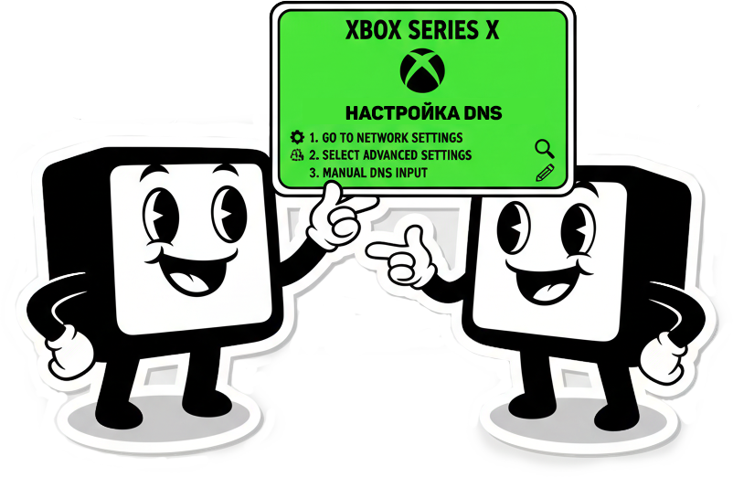

Настройка DNS на роутере Keenetic
Минимальный пинг. Нет ограничений. Полная стабильность.

Все настройки выполняются через веб-интерфейс маршрутизатора Keenetic.
Во избежание ошибок рекомендуется копировать команды и вставлять их без изменений.

1Откройте CLI-интерфейс
В адресной строке браузера введите один из следующих адресов:
http://192.168.1.1/a
https://192.168.1.1/a
https://my.keenetic.net/a
Если вы меняли IP-адрес роутера — используйте свой. Для 4G-моделей Keenetic попробуйте: http://192.168.2.1/a

2Настройте DNS для Xbox Live
Скопируйте и вставьте команду:
ip host xsts.auth.xboxlive.com 31.129.110.240
Нажмите «Отправить запрос».

3Сохраните конфигурацию
Введите команду:
system configuration save
Нажмите «Отправить запрос» — готово!
Перезагрузка не обязательна, но рекомендуется — это гарантирует полное применение изменений и стабильную работу сервисов Xbox Live.